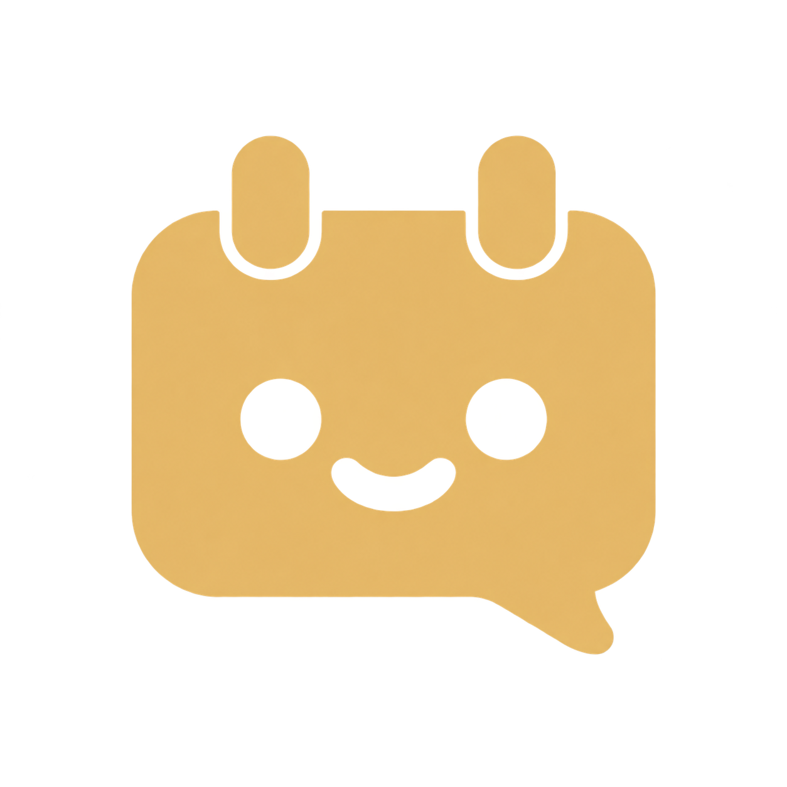

Raccogli il tuo mondo.
Foto, video, audio, testi e fonti. Organizzati per progetto, pronti quando arriva l’ispirazione.

feeddyCrea, pianifica e segui i social di ogni progetto.
Con la tua voce. E un po’ più di respiro.
Una foto qui. Un’idea nelle note. Il post da preparare. Feeddy riunisce materiali, contenuti e calendario in uno spazio che segue il tuo modo di lavorare.
Atlas Studio Un piccolo inizio, tante possibilità. 🌱
Foto, video, audio, testi e fonti. Organizzati per progetto, pronti quando arriva l’ispirazione.
Componi il post, scegli canale e formato, controlla l’anteprima. Oppure parti da un’idea con il copilot.
Guarda il piano completo, rivedi i contenuti e programma ciò che hai approvato. Con tutto il contesto davanti.
Dalla prima bozza a quello che succede dopo. Fai un giro tra gli strumenti che tengono insieme il tuo lavoro.
Un contenuto. La tua voce. Tutti gli strumenti.
Un piccolo inizio, tante possibilità. 🌱
Le idee migliori crescono un passo alla volta.
Una vista d’insieme, per trovare il ritmo giusto.
Profili, pubblicazioni e segnali per il prossimo contenuto.
Metriche disponibili secondo il canale e i permessi del profilo. Numeri esclusivamente illustrativi.
Componi foto, caroselli e video. Nello studio creativo trovi formati, ritaglio, testi, audio e sottotitoli. Controlli il risultato prima di usarlo.
Interfacce ricostruite · contenuti di esempioIl copilot parte dal contesto del progetto e ti aiuta a preparare piani e testi. Una conversazione per passare da «e adesso?» alla prossima bozza.
Puoi chiedergli una mano, riscrivere tutto o lavorare da solo. La creatività non ha un interruttore obbligatorio.
✓ AI facoltativa. La tua voce, sempre.Preparare una bozza non significa pubblicarla. Contenuti, calendario e approvazioni sono passaggi distinti: sai cosa stai autorizzando e puoi seguire gli esiti.
Identità, fonti, materiali e profili distinti. Per seguire più marchi senza mescolare le loro storie.
Prepara messaggio, pubblico e budget. Rivedi la campagna e autorizza l’attivazione in un passaggio dedicato.
Stati, diagnostica dei profili e registro attività. Gli invii e le conferme di pubblicazione restano distinguibili.
Le risposte alle domande che potresti avere già in mente.
No. Puoi caricare materiali, scrivere i contenuti e costruire il piano manualmente. Il copilot è un aiuto facoltativo, da attivare quando ti serve.
Puoi preparare e programmare i contenuti supportati dalle API dei profili collegati. Alcune funzioni native, come specifiche musiche o sticker, possono richiedere un ultimo passaggio nell’app ufficiale. Feeddy indica quando è necessario il completamento assistito.
Un profilo compatibile, i permessi richiesti e materiali per cui possiedi i diritti d’uso. Prepari il contenuto, rivedi il piano e autorizzi l’esecuzione. La disponibilità delle funzioni dipende anche dalla piattaforma e dal tipo di account.
Sì. Ogni progetto ha identità, canali, materiali e fonti propri. Puoi passare da uno all’altro conservando il contesto del lavoro.
Usi Feeddy dal browser, anche sul telefono. Il gestore del servizio configura le integrazioni; tu colleghi i tuoi profili e prepari i contenuti nel tuo spazio.
Porta i tuoi progetti. Al resto, diamo un ordine insieme.
Già disponibile sul servizio Feeddy · registrazione secondo le impostazioni del gestore.